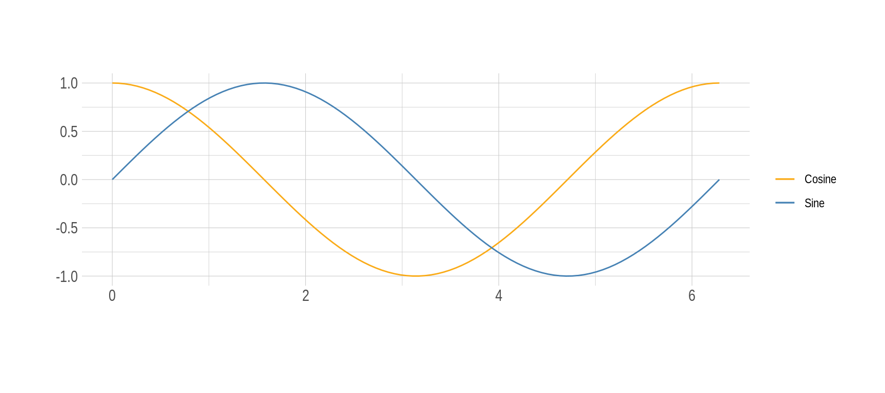
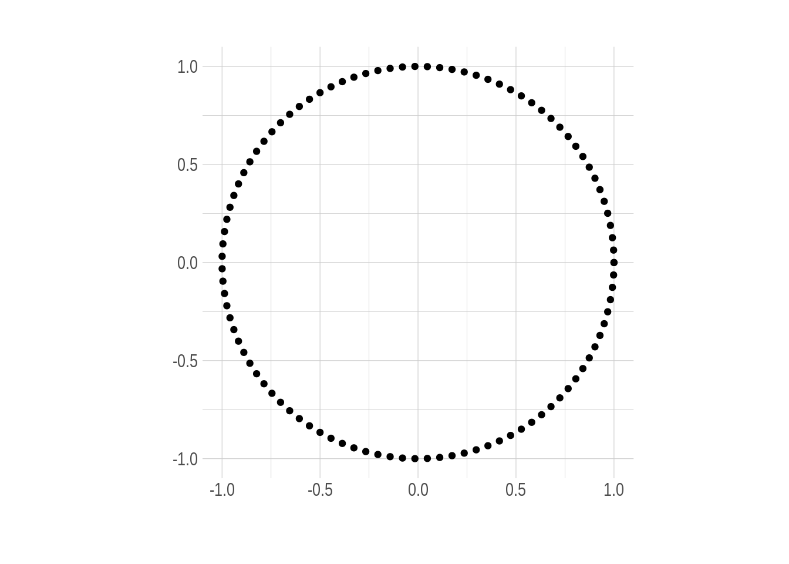
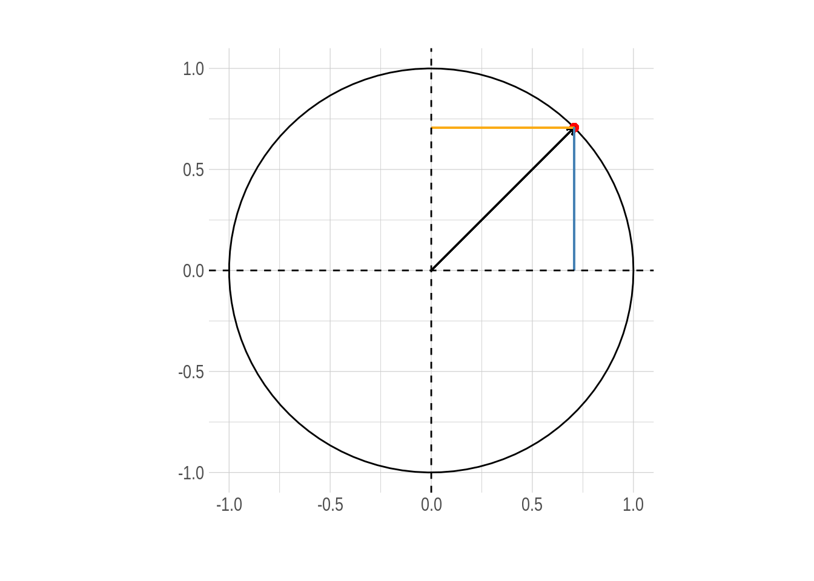
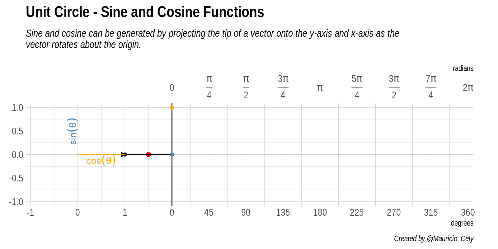

Uno de los grandes paquete en R es gganimate creado por Thomas Lin Pedersen. Y solo por diversión, vamos a emplearlo. Nuestro objetivo es crear un gráfico 2D simple y animado que represente la relación entre el Seno y el Coseno.
Antes de comenzar, quiero mostrarles los paquetes empleados para la animación.
library(tidyverse) # Easily Install and Load the 'Tidyverse'
library(gganimate) # A Grammar of Animated Graphics
library(hrbrthemes) # Additional Themes, Theme Components and Utilities for 'ggplot2'tidyverse es un paquete que reune varios paquetes de R (como dpylr, purr, ggplot entre otros) para manipular y visualizar datos. Por otro lado, hrbrthemes tiene un conjunto de temas para hacer que nuestros gráficos sean visualmente más agradable y así les demos un toque más elegante.
El primer paso para elaborar nuestra animación será evaluar ambas funciones trigonométricas \(\left( cos(\theta),sin(\theta) \right)\) en el ángulo \(\theta\), para esto crearemos un conjunto de datos con una columna llamada theta que es una secuencia de \(0\) a \(2\pi\) con 100 elementos usando la función seq() y luego calcularemos los valores que toman seno y coseno para cada angulo y almacenamos los resultados en las columnas \(y\) y \(x\), respectivamente.
df <-
tibble(theta = seq(0, 2*pi, length.out = 100), ### Angle
y = sin(theta), ### y-component
x = cos(theta) ### x-component
)Recordemos que en R los argumentos de las funciones
sin()ycos()son en radianes, NO en grados.
Una mirada rapida de los datos nos permite ver que cuando \(\theta\) es 0, el seno es 0 y el coseno es 1.
| theta | y | x |
|---|---|---|
| 0.0000000 | 0.0000000 | 1.0000000 |
| 0.0634665 | 0.0634239 | 0.9979867 |
| 0.1269330 | 0.1265925 | 0.9919548 |
| 0.1903996 | 0.1892512 | 0.9819287 |
| 0.2538661 | 0.2511480 | 0.9679487 |
| 0.3173326 | 0.3120334 | 0.9500711 |
Para apreciar el comportamiento de cada función a continuación se grafican seno y coseno a medida que \(\theta\) varia.
ggplot(df) +
geom_line(aes(theta, x, color = "Cosine")) +
geom_line(aes(theta, y, color = "Sine")) +
labs(x = "", y = "", color = "") +
scale_color_manual(values = c("#FAAB18", "steelblue")) +
coord_fixed() +
theme_ipsum()
Figure 1: Gráfica de las funciones seno y coseno en función de \(\theta\)
Se puede observar que ambas funciones toman valores entre \(-1\) y \(1\), aunque ambas oscilan de la misma manera parece que están desplazadas o mejor desfasadas horizontalmente una respecto a la otra. Siendo curiosos podríamos preguntarnos que ocurre si graficamos los valores de coseno en la abscisa y los del seno en la ordenada. ¡Voilà!, obtenemos como resultado un círculo.

Figure 2: El círculo unitario.
¿Que relación tienen las funciones Seno y Coseno con un círculo? Vamos a descubrirlo. Este círculo es conocido como círculo unitario, el cual tiene radio 1 y está centrado en el origen \((0,0)\) del sistema de coordenadas cartesianas. La importancia de este círculo radica en que hace que algunos temas de las matemáticas sean más fáciles y manejables. En el caso de la trigonometría para cualquier ángulo \(\theta\), los valores para seno y coseno son nada más que \(sin(\theta) = y\) y \(cos(\theta) = x\).
Usando seno y coseno, es posible describir cualquier point \((x,y)\) como alternativa al punto \((r, \theta)\), donde \(r\) es la longitud de un segmento de recta desde el origen hasta el punto y \(\theta\) es el ángulo entre el segmento de recta y el eje x. Este es llamado el sitema de coordenadas polares y para convertir se emplea la relación \((x,y) = \left( rcos(\theta),rsin(\theta) \right)\). Si quieres comprender y ver mejor como es esta relación visita este sitio.
ggplot(df) +
geom_path(aes(x = x, y= y)) +
geom_point(aes(x = cos(pi/4), y = sin(pi/4)), color = "red", size = 2) +
geom_segment(aes(x = 0, y = 0, xend = cos(pi/4), yend = sin(pi/4)),
arrow = arrow(length = unit(1.7, "mm"))) +
geom_segment(aes(x = 0, y = sin(pi/4), xend = cos(pi/4), yend = sin(pi/4)),
color = "#FAAB18") +
geom_segment(aes(x = cos(pi/4), y = 0, xend = cos(pi/4), yend = sin(pi/4)),
color = "steelblue") +
geom_hline(yintercept = 0, linetype = 2) +
geom_vline(xintercept = 0, linetype = 2) +
labs(x = "", y = "") +
coord_fixed() +
theme_ipsum()
Figure 3: Circulo unitario. Las componentes de cualquier punto \((x,y)\) sobre la circunferencia representan el coseno y seno del ángulo \(\theta\) que forma con la horizontal respectivamente
La tarea ahora consiste en combinar los gráficos del círculo y el seno y coseno. Al final del post encontrarás código que empleé para crear la animación que ve en la Figura 4.

Figure 4: Animación de la relación entre el circulo unitario, seno y coseno
Partiendo del origen, la flecha recorre la circunferencia de radio 1 desde el eje horizontal completando un giro de 360 grados. Las componentes horizontal y vertical representan las funciones trigónometricas a medida que el ángulo varia, como se ve cuando una crece la otra decrece.
Si tomamos la proyección vertical del punto alrederor de nuestra circunferencia y lo proyectamos en línea recta (a lo largo del eje \(y\)) en el gráfico a la derecha del círculo. Esto nos lleva al punto rojo. La coordenada \(y\) de este punto rojo es el valor de la función seno evaluada en el ángulo \(\theta\).
A medida que cambia el ángulo \(\theta\), podemos ver que el punto rojo se mueve hacia arriba y hacia abajo, trazando el gráfico azul. Este es el gráfico para la función seno. Las líneas discontinuas que ves pasar marcan cada cuadrante a lo largo del círculo, es decir, en cada ángulo de $ 90°$ o \(\pi/2\) radianes. Observa cómo la curva sinusoidal va de 1, a cero, a -1, luego vuelve a cero, exactamente en estas líneas. Esto refleja el hecho de que \(sin(0) = 0\), \(sin(\pi/2) = 1\), \(sin(\pi) = 0\) y \(sin(3\pi/2) = -1\).
Si seguimos el mismo razonamiento e imaginamos un punto proyectado paralelo a la coordenada \(x\), es posible deducir el comportamiento de la función coseno evaluada en el ángulo \(\theta\), es decir:
La curva amarilla trazada por este punto imaginario es la gráfica de la función coseno. Observa nuevamente cómo se comporta cuando cruza cada cuadrante, reflejando el hecho de que \(cos(0) = 1\), \(cos(\pi/2) = 0\), \(cos(\pi) = -1\) y \(cos(3\pi/2) = 0\).
Ahora es tu momento de intentarlo. Espero que esta animación y breve explicación sobre el círculo unitario y la función seno y coseno te sean útiles. ¡Hasta la proxima!
Si prefieres puedes encontrar un script con el código completo aquí.
library(tidyverse) # Easily Install and Load the 'Tidyverse'
library(gganimate) # A Grammar of Animated Graphics
library(hrbrthemes) # Additional Themes, Theme Components and Utilities for 'ggplot2'
df <-
tibble(theta = seq(0, 2*pi, length.out = 100), ### Angle
x = cos(theta), ### x-component
y = sin(theta) ### y-component
)
### Add frame colum for each step of the animation
df <-
df %>%
mutate(frame = 1:n()) %>%
relocate(frame)
### Labels superior axis in radians
rad_labels <- c(expression(phantom(over(1,1))*0*phantom(over(1,1))),
expression(frac(pi, 4)),
expression(frac(pi, 2)),
expression(frac(3*pi, 4)),
expression(phantom(over(1,1))*pi*phantom(over(1,1))),
expression(frac(5*pi, 4)),
expression(frac(3*pi, 2)),
expression(frac(7*pi, 4)),
expression(phantom(over(1,1))*2*pi*phantom(over(1,1)))
)
sine <-
ggplot(df) +
### Circle
geom_point(aes(x, y)) +
geom_path(aes(x, y)) +
### Angle arrow
geom_segment(aes(x = 0, y = 0, xend = x, yend = y), arrow = arrow(length = unit(1.7, "mm"), type = "closed")) +
geom_segment(aes(x = 2, y = 0, xend = Inf, yend = 0), linetype = "dashed") +
### Red point and its line
geom_point(aes(x = 1.5, y = y), color = "red", size = 2) +
geom_vline(xintercept = 2) +
### Connecting lines circle and functions
geom_segment(aes(x = x, y = y, xend = theta + 2, yend = y)) +
geom_segment(aes(x = 0, y = 0, xend = 0, yend = y), color = "steelblue") +
geom_segment(aes(x = x, y = 0, xend = x, yend = y), color = "steelblue", linetype = 2) +
geom_text(aes(x = -0.12, y = 0.5, label = "sin(theta)"), color = "steelblue", parse = T, angle = 90) +
geom_segment(aes(x = 0, y = 0, xend = x, yend = 0), color = "#FAAB18") +
geom_segment(aes(x = 0, y = y, xend = x, yend = y), color = "#FAAB18", linetype = 2) +
geom_text(aes(x = 0.5, y = -0.12, label = "cos(theta)"), color = "#FAAB18", parse = T) +
geom_path(aes(theta + 2, y), color = "steelblue") +
geom_point(aes(x = theta + 2, y = y), color = "steelblue") +
geom_path(aes(theta + 2, x), color = "#FAAB18") +
geom_point(aes(x = theta + 2, y = x), color = "#FAAB18") +
coord_fixed(expand = F, xlim = c(-1.1, 8.4), ylim = c(-1.1, 1.1)) +
scale_x_continuous(breaks = c(-1:1, seq(2, (2*pi) + 2, length.out = 9)),
labels = c(-1:1, seq(0, 360, length.out = 9)), name = "degrees",
sec.axis = sec_axis(trans = ~.*1,
breaks = c(rep(NA,3), seq(2, (2*pi)+2, length.out = 9)),
labels = c(-1:1, rad_labels),
name = "radians")) +
labs(title = "Unit Circle - Sine and Cosine Functions",
subtitle = "Sine and cosine can be generated by projecting the tip of a vector onto the y-axis and x-axis as the\n vector rotates about the origin.",
caption = "Created by @Mauricio_Cely",
y = "") +
theme_ipsum() +
theme(plot.margin = margin(-1, 1, -1, 0, unit = "cm"),
plot.subtitle = element_text(face = "italic")) +
transition_reveal(along = frame)
# options(gganimate.dev_args = list(res = 115))
animate(sine,
width = 1600, # 900px wide
height = 800, # 600px high
duration = 10,
renderer = gifski_renderer(),
res = 200) # 10 frames per second
anim_save("unit_circle.gif")